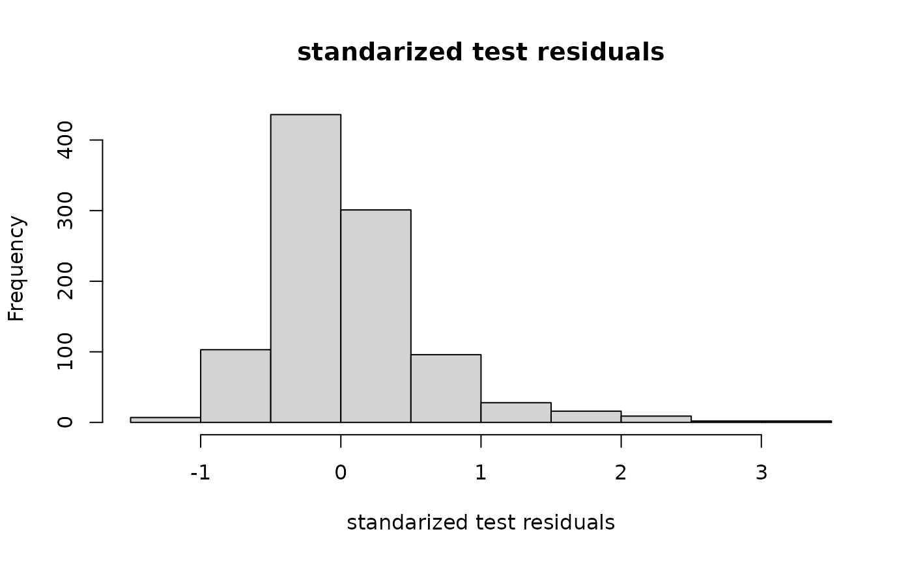
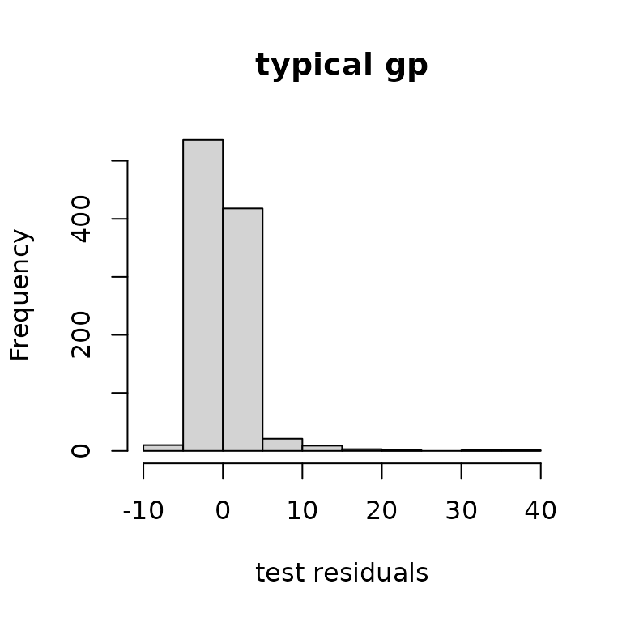
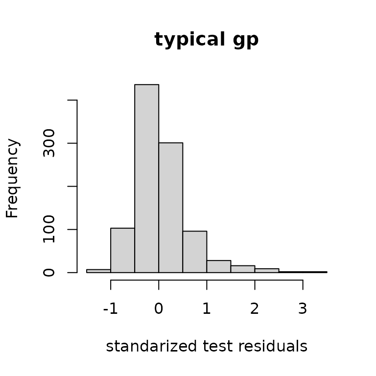

This page is designed to explain ?outermod and ?outerbase.
A three dimensional case study is sufficient for understanding what outermod and outerbase are and how to manipulate them.
sampsize = 30
d = 3
design1d = seq(1/(2*sampsize),1-1/(2*sampsize),1/sampsize)
x = cbind(design1d,sample(design1d),sample(design1d))
y = obtest_borehole3d(x)Covariance functions
Covariance functions are an important building block of Gaussian process inference. This package uses a custom class to represent covariance function. See ?covf for more information on the base class.
Creating instances is done through the ?methods::new call with the class name listed inside.
corf = new(covf_mat25)The cov method builds covariances matrices. Below is an example of calling this method. Note that these are designed to be single dimensional covariance functions.
xred = x[1:5,1]
print(corf$cov(xred,xred),3)
#> [,1] [,2] [,3] [,4] [,5]
#> [1,] 1.000 1.000 0.999 0.998 0.997
#> [2,] 1.000 1.000 1.000 0.999 0.998
#> [3,] 0.999 1.000 1.000 1.000 0.999
#> [4,] 0.998 0.999 1.000 1.000 1.000
#> [5,] 0.997 0.998 0.999 1.000 1.000Hyperparameters are important for almost all covariance functions. They control the general shape and behavior of the covariance function. They are stored in the covf class in the (editable) field hyp.
corf$hyp
#> [,1]
#> [1,] 0You can see the effect of alternating hyp below on this correlation function.
Gaussian processes
Gaussian processes have long been shown to be top performers for near interpolation. For more information on general Gaussian processes, see the textbooks Gaussian Processes for Machine Learning or Surrogates, among others.
The idea is to represent a surface as a realization of a Gaussian process controlled by a covariance function. An outer product of covariance functions can do this job in three dimensions. This means we need to first build covariance functions.
corf1 = new(covf_mat25)
corf2 = new(covf_mat25)
corf3 = new(covf_mat25)
corf1$hyp = c(-0.5) # just setting them all to the same
corf2$hyp = c(-0.5) # hyperparameter for now
corf3$hyp = c(-0.5)And then multiply them to calculate the covariance between two sets of points.
covftot = function(x1,x2){
corf1$cov(x1[,1],x2[,1])*
corf2$cov(x1[,2],x2[,2])*
corf3$cov(x1[,3],x2[,3])
}
cormattot = covftot(x,x) #total correlation matrixThe goal of Gaussian process inference is to take our data and predict at some number of points, say 1000 points.
The predictor follows from typical formulas (assuming y is zero mean, see textbooks).
This gives prediction accuracy that can be summarized below.
par(mfrow=c(1,2))
ytest = obtest_borehole3d(xtest)
plot(yhat, ytest, ylab="actual", xlab="prediction")
hist(ytest-yhat, main="test residuals",
xlab = "test residuals")We can also use this framework to get predictive variances. These equations will not be explained in this documentation for brevity. One point here is that is does pretty well! The plot below looks standard Normal enough.
sigma2hat = as.double(t(y)%*% solve(cormattot,y)/length(y))
varpred = sigma2hat*(covftot(xtest,xtest)-t(covftot(x,xtest))%*%
solve(cormattot,covftot(x,xtest)))
hist((ytest-yhat)/sqrt(diag(varpred)),
main="standarized test residuals",
xlab = "standarized test residuals")
The main complaints about Gaussian process inference are stability and computation speed. This package is designed to reduce those concerns.
outermod and outerbase
The core classes in this package are ?outermod and ?outerbase. An outermod instance contains all the information to build an outerbase instance, but does not build the objects corresponding to a specific x. An outerbase instance is used build inference at a specific x.
outermod
An instance of the class outermod is designed to hold the information needed to create a basis matrix. An outermod instance is created using new command.
om = new(outermod)The first step is to set the covariance functions and the knots. To set the vector of covfs, use ?setcovfs alongside a vector strings of covariance functions in the package (?listcov).
This fixes the dimension of the outermod instance om to 3.
Then we need to give it a set of knot points for each dimension. The choice of these is still being researched, but choosing points that are spread out in each dimension that look like our actual data is currently recommended. You will need to invert a matrix of the size of these knot points, so it is recommended to keep it small, <50 in general. The function ?setknot should be used.
The hyperparameters can be set directly through our outermod object.
outerbase
An instance of the class outerbase is the equivalent of a basis matrix with fast computation methods included. It is also created with new, but it also requires a reference to an outermod instance and a specific set of prediction points x.
ob = new(outerbase,
om, # an outermod (reference only)
x) # an input matrixThis builds a set of basis functions for each dimension, which sometimes just look like polynomials. They are not quite polynomials, and some covariance functions give different shapes. The call outerbase$getbase will allow you to access the basis functions for each dimension. This is mostly useful for plotting.
basis_func = ob$getbase(1)
matplot(x[,1],basis_func[,1:4],
type='l', ylab="func", xlab="first dim")outermod and outerbase
outermod and outerbase are meant to be used in conjunction with each other. One key ingredient is the outermod$selectterms function, which allows you to pick products of basis functions that best represent the current outermod response.
p = 60
terms = om$selectterms(p) # 60 by 3 matrix
head(terms)
#> [,1] [,2] [,3]
#> [1,] 0 0 0
#> [2,] 1 0 0
#> [3,] 0 0 1
#> [4,] 0 1 0
#> [5,] 1 1 0
#> [6,] 1 0 1outermod$getvar returns the vector of variances associated with these coefficients at these terms.
covcoeff = as.vector(om$getvar(terms))The specific basis matrix can be formed by getting the basis matrix at these selected terms. outerbase$getmat will give a short cut to building this matrix.
basismat = ob$getmat(terms)
termno = 5
basevec = ob$getbase(1)[,terms[termno,1]+1]*
ob$getbase(2)[,terms[termno,2]+1]*
ob$getbase(3)[,terms[termno,3]+1]
cbind(basevec[1:5],basismat[1:5,5]) # expect equal
#> [,1] [,2]
#> [1,] 0.2667642 0.2667642
#> [2,] -1.3287883 -1.3287883
#> [3,] 2.0756653 2.0756653
#> [4,] 0.9756641 0.9756641
#> [5,] -1.6229195 -1.6229195Feature space approximation
This package leverages the insight that Gaussian processes are no more than linear combinations of basis functions with random coefficients. This viewpoint is often called the feature space view of Gaussian processes.
To see this, not that if you take the covcoeff and basismat together, the correlation function is very well approximated through the following manipulation.
cormatob = basismat%*%diag(covcoeff)%*%t(basismat)
print(round(cormattot[1:5,1:5],3)) # typical gp
#> [,1] [,2] [,3] [,4] [,5]
#> [1,] 1.000 0.871 0.744 0.871 0.352
#> [2,] 0.871 1.000 0.580 0.791 0.554
#> [3,] 0.744 0.580 1.000 0.899 0.296
#> [4,] 0.871 0.791 0.899 1.000 0.456
#> [5,] 0.352 0.554 0.296 0.456 1.000
print(round(cormatob[1:5,1:5],3)) # outerbase
#> [,1] [,2] [,3] [,4] [,5]
#> [1,] 0.999 0.871 0.744 0.871 0.352
#> [2,] 0.871 1.000 0.580 0.791 0.554
#> [3,] 0.744 0.580 1.000 0.899 0.296
#> [4,] 0.871 0.791 0.899 1.000 0.456
#> [5,] 0.352 0.554 0.296 0.456 1.000They means that we can leverage Bayesian linear regression to do prediction. This will require assuming that there is some noisevar, which is also called the nugget in the Gaussian process literature.
Predictions and comparison
Consider predicting at some new xtest to examine if the inference works the same between the traditional Gaussian process and the feature space approximation.
obtest = new(outerbase,
om, # same outermod
xtest) # new input matrix
basistest = obtest$getmat(terms)The predictions are nearly equivalent.
yhatob = basistest%*%coeffest
par(mfrow=c(1,2))
plot(yhat, ytest, main="typical gp",
xlab="prediction", ylab="actual")
plot(yhatob, ytest, main = "outerbase equiv.",
xlab="prediction", ylab="actual")The histograms of residuals show similar matching.
par(mfrow=c(1,2))
hist(ytest-yhat, main="typical gp",
xlab="test residuals")
hist(ytest-yhatob, main="outerbase equiv.",
xlab="test residuals")
The standardized residuals, which account for the variance, also show similar matching.
varpredob = basistest%*%postcov%*%t(basistest)
par(mfrow=c(1,2))
hist((ytest-yhat)/sqrt(diag(varpred)), main="typical gp",
xlab="standarized test residuals")
hist((ytest-yhatob)/sqrt(diag(varpredob)), main="outerbase equiv.",
xlab="standarized test residuals")